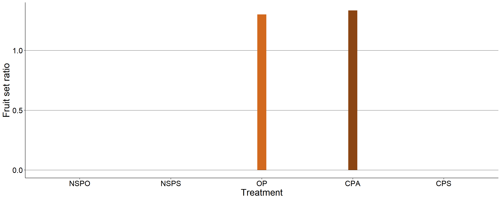
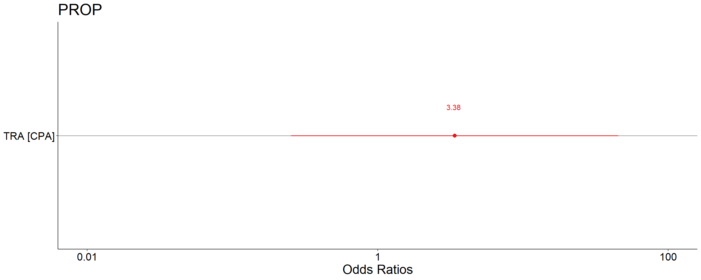

The objective of this essay was to study the pollination regime of the species.
Pollination studies were carried out on floral buds that had not begun anthesis yet. In the natural self-pollinated (NSPO) treatment, branches with only one bud were isolated with paper bags , in natural self-pollinated (NSPS) branches with several buds were isolated with paper bags to check auto compatibility, while in the open pollination (OP) treatment branches were only identified. In the cross-pollinated (CPA) trial, buds were emasculated and then pollinated manually with pollen from another genotype and in cross pollinated (CPS) the buds were emasculated and then pollinated manually with pollen from anothers flowers on the same genotype. These branches were also covered with paper bags to avoid the entrance of unknown pollen. Twenty repetitions of each treatment were performed in random branches. Finally, thirty days later fruit set was verified.

##
## Call:
## glm(formula = PROP ~ TRA, family = "binomial", data = datapol4)
##
## Deviance Residuals:
## Min 1Q Median 3Q Max
## -0.6501 -0.3666 -0.3666 0.3436 0.7993
##
## Coefficients:
## Estimate Std. Error z value Pr(>|z|)
## (Intercept) -2.666 0.907 -2.939 0.00329 **
## TRACPA 1.219 1.323 0.922 0.35659
## ---
## Signif. codes: 0 '***' 0.001 '**' 0.01 '*' 0.05 '.' 0.1 ' ' 1
##
## (Dispersion parameter for binomial family taken to be 1)
##
## Null deviance: 7.1396 on 26 degrees of freedom
## Residual deviance: 6.3171 on 25 degrees of freedom
## AIC: 9.6467
##
## Number of Fisher Scoring iterations: 5
Only treatments open pollination [OP] (5.6%) and artificial cross-pollinated [CPA] (20.0%) presented fruit set. Therefore the species is self-incompatible.